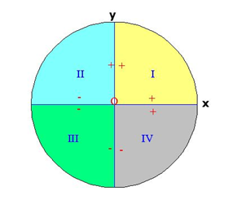

Para representar ángulos en una circunferencia:
- Cogemos el O (0,0) como vértice
- Usamos el radio del semieje positivo de abscisas como origen
- Dibujamos el extremo del ángulo midiéndolo
- En sentido contrario a las agujas del reloj, si es positivo
- En el sentido de las agujas del reloj, si es negativo
Si el radio es 1, se llama circunferencia goniométrica.
Tenemos cuatro cuadrantes:
